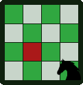

Andrew Ryan

About
Welcome! This is a hub for anything I've done or found interesting. I'll post projects related to web development, circuits, and data science on here that you can check out.
Projects
Web Development

Knights Travails
Knights Travails

Knights Travails is a tangent to the shortest path problem,
where a chess knight must find the shortest path from any position
on the board to a selected target. Drag the knight to a square and press
calculate to find the optimal path!
Amazon Clone
Amazon Clone *(WIP)
Amazon clone web application built with React. You can query over 2 million unique products, add your selections to the cart, and checkout!
Product data is stored using MongoDB and session data is stored using Redis.
CV Builder
Curriculum Vitae Builder
Create your own Curriculum Vitae! Add details as you wish and preview your document live.
You can export your document as a PDF and data is automatically saved in storage.
Built with React.
Knights Travails
Knights Travails
Knights Travails is a tangent to the shortest path problem, where a chess knight must find the shortest path from any position on the board to a selected target. Drag the knight to a square and press calculate to find the optimal path!
Amazon Clone
Amazon Clone *(WIP)
Amazon clone web application built with React. You can query over 2 million unique products, add your selections to the cart, and checkout! Product data is stored using MongoDB and session data is stored using Redis.
CV Builder
Curriculum Vitae Builder
Create your own Curriculum Vitae! Add details as you wish and preview your document live. You can export your document as a PDF and data is automatically saved in storage. Built with React.